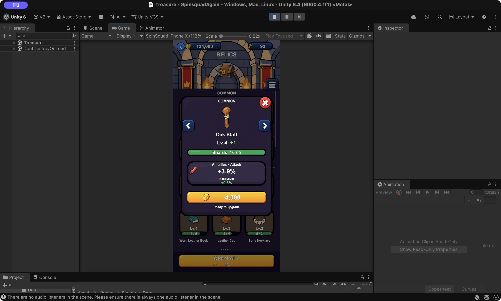
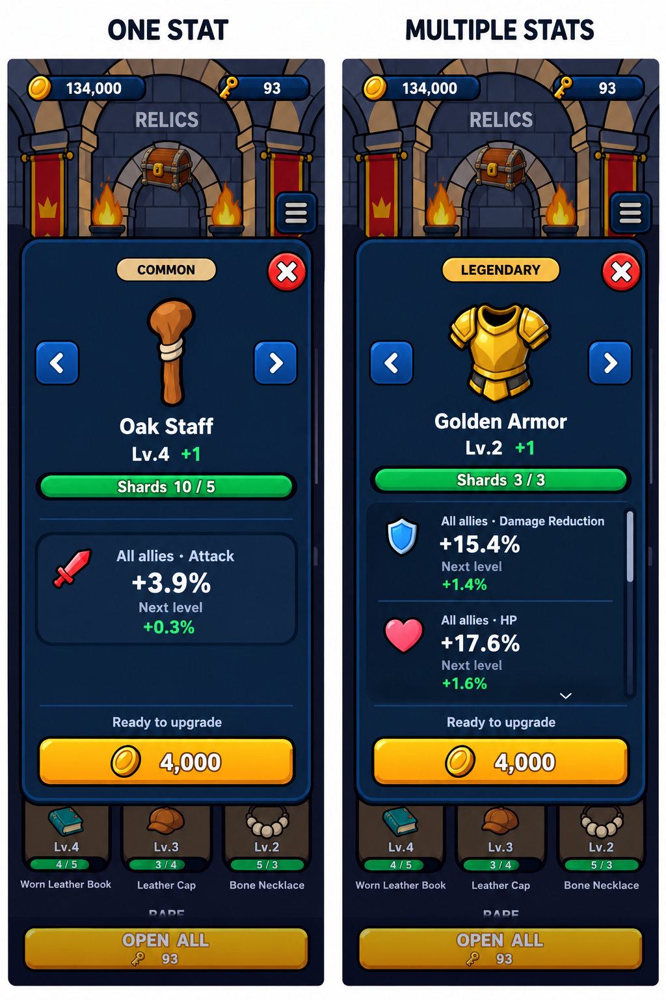

Ảnh hiện tại bên dưới là ảnh chụp từ game đã lưu, không phải Play Mode vừa chạy. Bản đề xuất chỉ để duyệt, chưa thay runtime; chỉ số và giá minh họa lấy theo cấu trúc hiện có.


Icon, tên, level, thanh mảnh và nút gold cố định. Chỉ khu vực mô tả/chỉ số cuộn khi nội dung vượt khung. Không tự nâng, không đổi cơ chế cộng chỉ số.